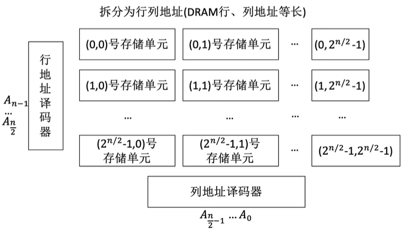
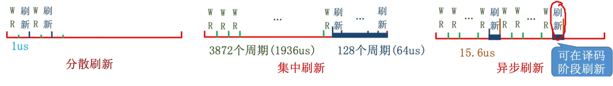

SRAM, DRAM, ROM
RAM : 随机访问存储器，指定地址时读取速度不因物理位置改变
DRAM(Dynamic RAM)：动态随机存储器，用于主存; SRAM(Static RAM)：静态随机存储器，用于Cache
我们直接使用表格对比来进行
| 特性 | SRAM | DRAM |
|---|---|---|
| 存储介质 | 双稳态触发器（6个MOS管） | 栅极电容（1个MOS管 + 1个电容） |
| 读出特性 | 非破坏性读出 | 破坏性读出（需重写/再生） |
| 性能参数 | 速度更快（无需刷新步骤） | 速度较慢 |
| 集成度 | 较低（元件复杂） | 较高（元件简单） |
| 功耗 | 较大（6个MOS管持续工作） | 较小 |
| 成本 | 成本高 | 成本低 |
| 应用 | 高速缓存（Cache） | 主存 |
| 易失性 | 两者均为易失性存储器 | 两者均为易失性存储器 |
| 刷新机制 | 不需要 | 需要（约2ms周期） |
| 地址传输 | 同时传送行、列地址(因为SRAM的容量较小, 所以可以直接全部传送) | 分两次传送（地址线复用）(因为容量太大, 所以通过地址复用减少引脚数量) |
DRAM 的刷新策略
刷新周期
- 刷新频率：由于电容中的电荷最多只能保持约2ms，DRAM必须在2ms内对所有电容进行重新充电刷新。
- 默认周期：题目未明确告知时，通常默认DRAM的刷新周期为2ms。
行列地址的使用
- 刷新单位：DRAM的刷新是以行为单位进行的，每次刷新一整行存储单元。
- 地址拆分：DRAM的 位地址会被拆分为行地址和列地址（通常DRAM的行、列地址位数等长）。
- 设计优势：
- 减少选通线数量：例如， 位地址原本需要 根选通线，通过拆分为10位行地址和10位列地址，可分别减少到 （1K）根选通线。
- 工程简化：1K根选通线（1024根）的实现比1M根更易实现。
- 地址译码：
- 行地址译码器：用于选中一整行存储单元。
- 列地址译码器：用于选中行中特定的列（用于读写操作）。
- 读写条件：只有当行选通信号和列选通信号同时有效时，才能进行数据的读写操作。

刷新操作
- 操作原理：刷新电路会读出一整行信息后立即重新写入（即给对应的电容重新充电）。
- 耗时：一个刷新操作的耗时通常与一个读写周期相同（例如约0.5μs）。
- 硬件支持：需要专门的刷新电路来支持自动刷新。
刷新策略
- 分散刷新：
- 方式：每次CPU对存储器进行读写操作后，立即刷新一行。
- 影响：存储器的存取周期会从0.5μs延长到1μs（因为增加了一个刷新周期）。
- 效率：在2ms内可完成2000次刷新（通常远超过DRAM所需刷新行数，如128行）。
- 集中刷新：
- 方式：在每2ms周期的末尾，集中进行所有行的刷新（例如，刷新128行）。
- 影响：会产生一个“死区”（或称死时间），在此期间CPU无法访问存储器。例如， 行刷新可能占用 的时间。
- 异步刷新（最优）：
- 方式：将2ms的总刷新时间分散到整个周期内，例如每隔 刷新一行。
- 影响：每次刷新只会产生0.5μs的短时死时间。
- 优势：在实际应用中，可以利用CPU进行译码等操作的空闲时间进行刷新，从而减少对CPU访问存储器造成的干扰。

ROM
- 易失性区别：
- RAM 芯片具有易失性，断电后数据消失。
- ROM 芯片具有非易失性，断电后数据不会丢失。
- 主要类型：MROM、PROM、EPROM、EEPROM、闪存（Flash Memory）、SSD等。
各种芯片总结
MROM (Mask Read-Only Memory)
- 全称：掩模式只读存储器（Mask Read-Only Memory）。
- 写入方式：由厂家在生产过程中，根据客户需求直接写入数据，使用掩膜技术。
- 特性：
- 可靠性：高。
- 灵活性：差（写入后不可更改）。
- 生产周期：长。
- 适用场景：适合批量定制的应用。
- 本质：纯粹的只读存储器，只能读取不能写入。
PROM (Programmable Read-Only Memory)
- 全称：可编程只读存储器（Programmable Read-Only Memory）。
- 写入方式：用户可以使用专用PROM写入器（编程器）写入信息。
- 特性：
- 写入次数：仅能写入一次，之后不可更改。
- 优势：相比MROM，灵活性大大提高，允许用户个性化定制数据。
- 本质：仍为纯粹的只读存储器。
EPROM (Erasable Programmable Read-Only Memory)
- 全称：可擦除可编程只读存储器（Erasable Programmable Read-Only Memory）。
- 核心特性：允许擦除后重新写入，突破了“只读”的限制。
- 分类：
- UVEPROM：使用紫外线擦除。 全片擦除，不能选择性擦除部分数据。灵活性：相对较低。
- EEPROM：使用电擦除。可以擦除特定字（支持选择性擦除）,修改次数有限。写入时间较长。
Flash Memory (闪存)
- 特点：
- 在EEPROM基础上发展而来。
- 断电后信息仍能保存。
- 支持多次快速擦除重写。
- 应用实例：U盘、SD卡。
- 性能特点：
- 写速度比读速度慢（因为写入前需要先进行擦除操作）。
- 存储单元体积小（通常是单个MOS管）。
- 位密度高（相同体积下存储容量大于RAM）。
- 技术发展：手机存储使用集成度更高的闪存芯片，体积更小、功耗更低但价格更贵。
SSD (Solid State Drive)
- 构成：主要由闪存芯片 + 控制单元组成。
- 与U盘区别：主要在于控制单元的不同，SSD的控制器更复杂、更强大。
- 优势：
- 速度快。
- 功耗低。
- 应用现状：逐步取代机械硬盘成为主流存储介质。
- 注意：云存储目前仍主要使用机械硬盘（基于成本考虑）。
BIOS芯片
- 存储内容：主要存储自举装入程序（Bootstrapper / Bootstrap Loader）。
- 功能：在计算机开机时，负责引导装入操作系统。
- 特性：非易失性。
- 主存构成：在逻辑上，计算机的主存包含RAM（内存条）和ROM（如BIOS芯片）。它们通常进行统一编址（ROM的地址通常在RAM地址之前）。